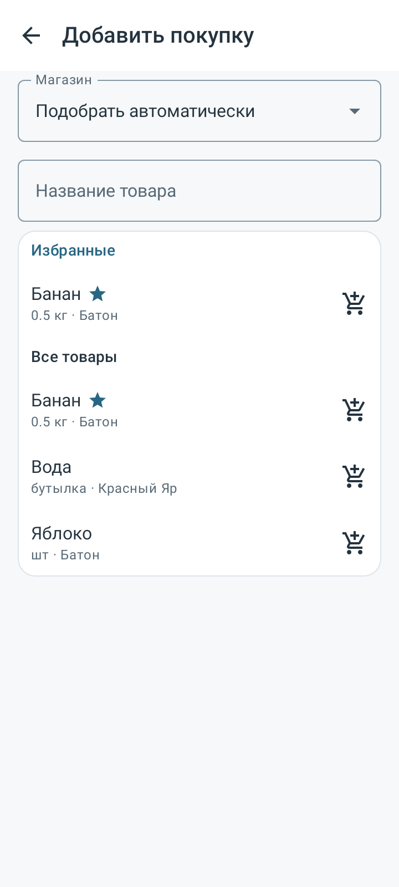
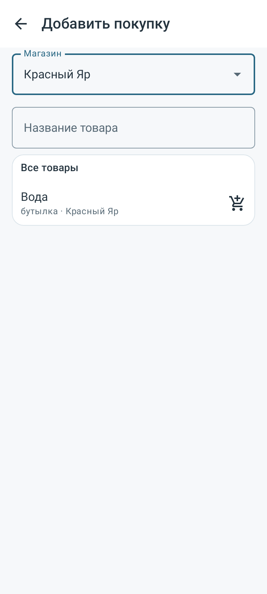
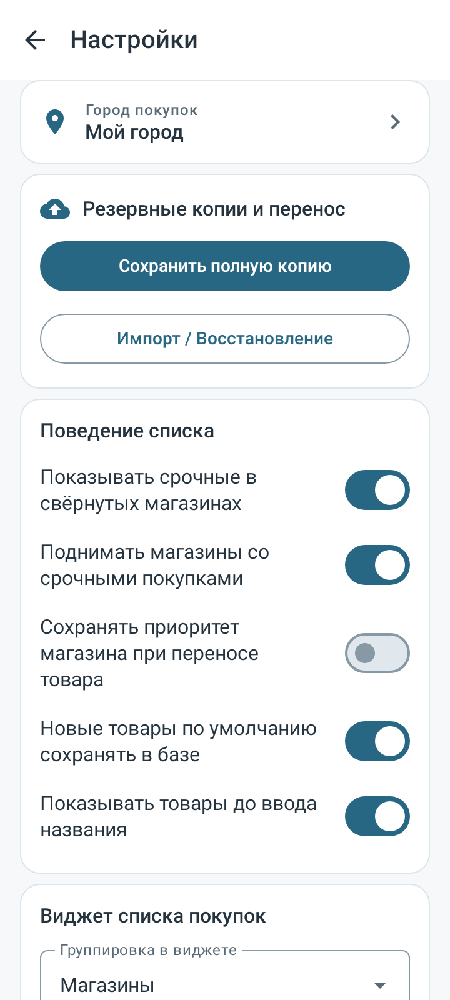
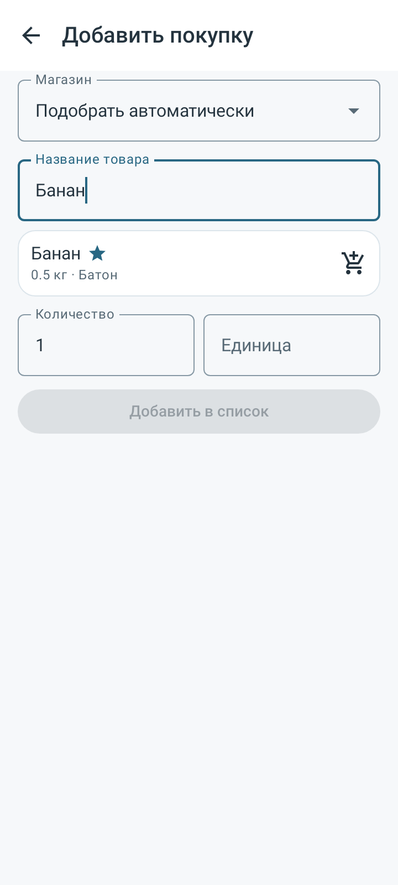
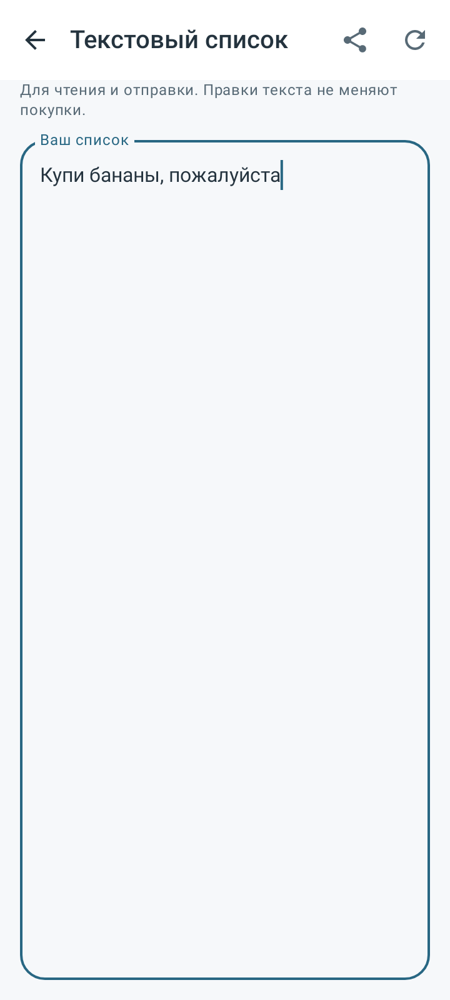
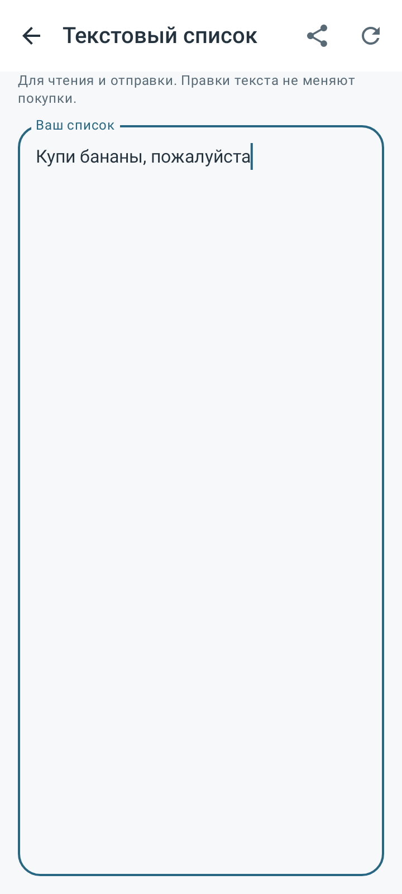
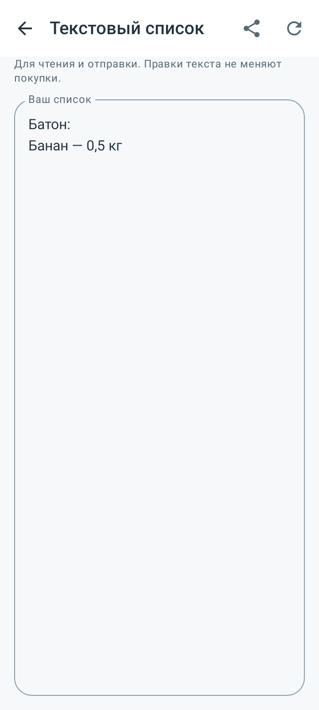
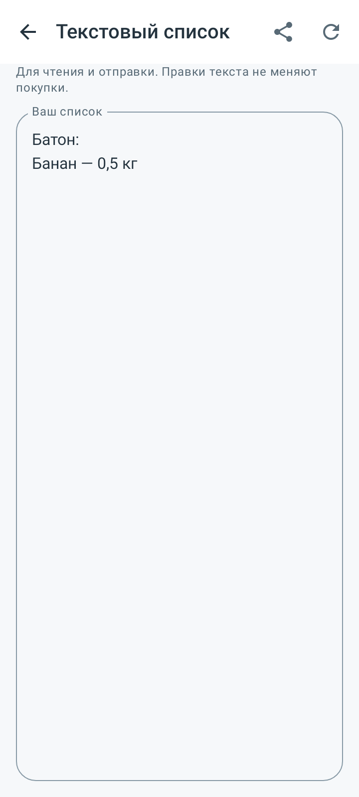

Выбор покупок без ввода и текст для отправки · 19 октября2026.
Установить APK0.14.0(20) · SHA256 · Проверки · Исходники · Доказательства
Прежний пакет и подпись; Android8.0+. Обновление поверх предыдущей версии без новой миграции базы. SHA256: 8a38e8067fd7f32257ca01b3627223466dc30142478547b43dea7ff783f13c82
Виджет и его настройки сохранены без изменений.
563/563 проверок в57 классах, failures/errors/skipped=0. Release/lint и итоговая проверка UI: BUILD SUCCESSFUL; lint0 ошибок/119 предупреждений/3 подсказок. Проверены APK0.14.0(20), русский label, .next пакет и прежний сертификат. Room14/ZIP10, миграция не нужна. SHA256 8a38e8067fd7f32257ca01b3627223466dc30142478547b43dea7ff783f13c82. Код приложения неизменен с начала полного прогона; после него исправлена только подпись в одном старом UI-тесте. В первом полном прогоне561/563 прошли,2 падения вызвала прежняя подпись; весь исправленный класс затем16/16 успешно повторён. Итоговые563 проверки собраны из56 прошедших классов полного прогона и повторной проверки этого класса; 19 файлов виджета/его настроек побайтно соответствуют 0.13.0. Получены 14 native PNG (API 28/35). Прежние APK и личный экспорт сохранены. Физический телефон и реальный мессенджер не проверялись; GitHub не менялся.
26 новых проверок на API28/35 охватывают выбор без ввода, русский алфавит, повтор избранных, доступность адресов, настройку и её восстановление, последовательное добавление, создание нового товара, отсутствие влияния текста на корзину, реальный системный chooser, повторное открытие и путь добавления из виджета. Обновлённые UI-тесты следуют новому контракту текста. Прежний парсер находится только в тестовом compatibility harness и в APK не входит.
Ниже — нативная отрисовка Compose с вымышленными тестовыми данными на API28/35. Физическая установка, клавиатура конкретного телефона и отправка через реальный Telegram отдельно не проверялись. Проверен системный Intent отправки text/plain с видимым текстом. Личные данные не встроены в APK. Новая публикация GitHub не выполнялась.
Проверены обязательные01/08/09/12/13 и профильные02/03/05/06/07/10/11/14/20/31/35. Обновлены01/02/05/06/07/08/09/11/13/14/20/31/README, добавлен36_ADD_BROWSE_SHARE_140.md. Протокол12 и запреты10 не менялись. Документы включены в исходники.







